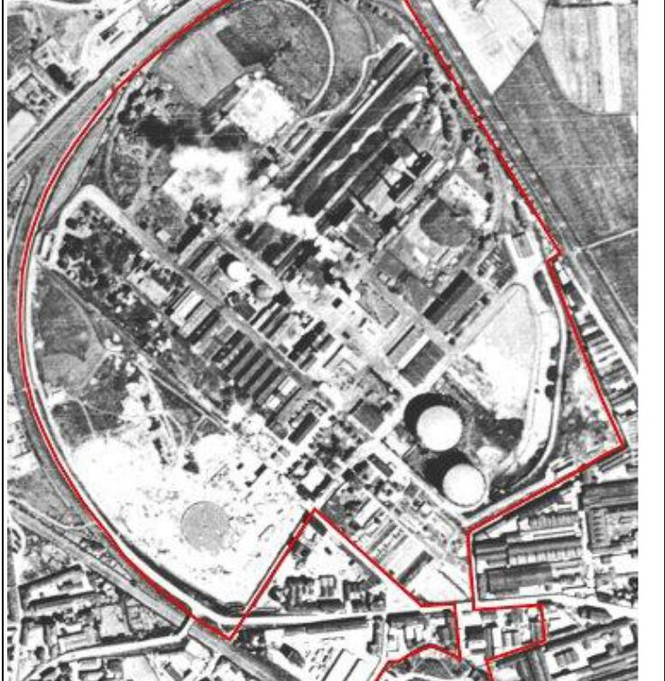

Cos'è e quando serveQuando un sito è contaminato, e chi lo stabilisce
Un'area industriale che ha ospitato per decenni lavorazioni con solventi, oli, metalli o idrocarburi accumula quasi sempre, nel sottosuolo, un'eredità chimica che non è visibile in superficie: perdite da serbatoi interrati, sversamenti accidentali, infiltrazioni da piazzali non impermeabilizzati. Quell'eredità diventa un problema tecnico e legale nel momento in cui il sito cambia destinazione — da industriale a residenziale, da dismesso a riqualificato — o quando un'indagine ambientale, spesso condotta in vista di una compravendita, rileva concentrazioni di contaminanti superiori ai limiti di legge.
Il punto di partenza logico di ogni procedimento è il confronto tra i dati analitici del sito e le Concentrazioni Soglia di Contaminazione (CSC): valori tabellati, differenziati per uso verde/residenziale e per uso commerciale/industriale, che non sono limiti da rispettare in senso assoluto ma soglie di allerta. Il loro superamento non significa automaticamente che il sito vada bonificato a quei valori: significa che va approfondito con un'Analisi di Rischio sanitario-ambientale sito-specifica, che tiene conto della sorgente di contaminazione, dei percorsi di migrazione (aria, acqua, suolo) e dei bersagli effettivamente esposti. Da quell'analisi si ricavano le Concentrazioni Soglia di Rischio (CSR), che sono i veri obiettivi a cui la bonifica deve arrivare — e che possono essere più permissive o più severe delle CSC di partenza, a seconda delle condizioni specifiche del sito.
Questa logica a due livelli — CSC come soglia di allerta, CSR come obiettivo sito-specifico — è il motivo per cui due siti con la stessa contaminazione misurata possono avere due percorsi di bonifica completamente diversi in termini di costi, tecnologie e tempistiche.
Il quadro normativo
La disciplina è contenuta nella Parte IV, Titolo V del D.Lgs. 152/2006, articoli 239-253. La procedura ordinaria dell'art. 242 segue il percorso caratterizzazione — Analisi di Rischio — Progetto Operativo di Bonifica basato sulle CSR. In alternativa, l'art. 242-bis introduce una procedura semplificata: chi è disposto a riportare la contaminazione a valori uguali o inferiori alle CSC può presentare direttamente il progetto di bonifica, saltando la fase di Analisi di Rischio. È un percorso più rapido nell'iter amministrativo, ma l'obiettivo di bonifica — le CSC anziché le CSR, spesso più permissive — lo rende in genere più oneroso come intervento.
Per le aree di ridotte dimensioni si applica l'art. 249, con le procedure semplificate dell'Allegato 4 alla Parte IV. L'art. 245 disciplina la posizione del soggetto non responsabile della contaminazione: non è tenuto a bonificare, ma può farlo volontariamente, in particolare per liberare l'area da oneri reali che ne condizionerebbero la vendita. I Siti di Interesse Nazionale (SIN), disciplinati dall'art. 252, seguono un iter aggravato che coinvolge direttamente il Ministero dell'Ambiente per l'ampiezza o la rilevanza strategica dell'area contaminata. Al termine dei lavori, è la Provincia o la Città metropolitana a rilasciare, ai sensi dell'art. 248, la certificazione di avvenuta bonifica.
Un nodo pratico ricorrente nei progetti di riqualificazione immobiliare è disciplinato dal comma 7-bis dell'art. 242: se gli obiettivi di bonifica sui suoli vengono raggiunti prima di quelli sulla componente acque di falda — situazione frequente, perché il trattamento della falda richiede tempi più lunghi — è possibile certificare in anticipo la sola parte suoli. Questo consente di avviare le opere edili mentre il trattamento delle acque sotterranee prosegue in parallelo, un vantaggio non secondario quando i cronoprogrammi di cantiere sono stretti.
Come si procede in pratica
La scelta della tecnologia dipende dalla matrice contaminata e dal tipo di contaminante. Per la falda, lo strumento più diffuso è lo sbarramento idraulico (pump and treat): pozzi di emungimento che intercettano il flusso della falda contaminata e la convogliano a un impianto di Trattamento Acque di Falda (TAF), dove i contaminanti vengono rimossi prima della restituzione dell'acqua in corpo idrico superficiale o in fognatura. La progettazione di questi sistemi si appoggia spesso a una modellazione matematica del comportamento della falda, che simula direzione e velocità di flusso per dimensionare correttamente numero e portata dei pozzi.
Per il terreno insaturo, contaminato da composti volatili come solventi clorurati o frazioni leggere di idrocarburi, si utilizzano sistemi di Soil Vapor Extraction (SVE), che estraggono per depressione i vapori dal sottosuolo, spesso abbinati al bioventing, che stimola la degradazione biologica dei contaminanti insufflando aria nel terreno. Il soil washing separa fisicamente, per via granulometrica, la frazione fine del terreno — dove tende a concentrarsi la contaminazione — da quella grossolana, riducendo così i volumi da smaltire come rifiuto. Le biopile trattano il terreno scavato accelerando la degradazione biologica degli idrocarburi in cumuli aerati e controllati.
Quando la rimozione integrale non è tecnicamente o economicamente sostenibile, si ricorre alla Messa in Sicurezza Operativa (MISO) o Permanente (MISP): un capping — o un biocapping, dove il sistema di copertura integra componenti vegetali e biologiche — isola la contaminazione residua, impedendo il contatto diretto e l'infiltrazione di acque meteoriche, senza rimuovere fisicamente i terreni contaminati.
I nostri interventi
Il Programma di Riqualificazione Urbana di via Palizzi a Milano, per conto di EuroMilano (1999-2004), è stato il primo incarico in cui abbiamo assunto la Direzione Lavori di una bonifica di scala urbana — EuroMilano diventerà negli anni il nostro committente più ricorrente.
Ai Gasometri della Bovisa (2002-2006, per Metropolitana Milanese S.p.A. per conto del Comune di Milano), inseriti tra i Siti di Interesse Nazionale, abbiamo redatto il Progetto Definitivo di Bonifica per un'area con contaminazioni da idrocarburi e metalli, impiegando soil washing, Soil Vapor Extraction, discarica di servizio e sbarramento idraulico; la scelta delle tecnologie è stata verificata con prove pilota di laboratorio di soil washing.
Sulle ex Cartiere Binda, lungo l'Alzaia del Naviglio Pavese (2004-2007), abbiamo diretto la bonifica di un sito contaminato da PCB, metalli e idrocarburi, oggi trasformato in quartiere residenziale. Sulle ex Officine Metallurgiche Broggi (2004-2007), contaminate da metalli e idrocarburi, abbiamo condotto caratterizzazione, progettazione e Direzione Lavori di bonifica e sbarramento idraulico per l'area che oggi ospita una sede del Politecnico di Milano.
Sulle ex Industrie Chimiche Baslini di Treviglio abbiamo seguito l'intero percorso dal 2007 al 2023: un sito con contaminazioni da metalli, idrocarburi, solventi e pesticidi, su cui abbiamo diretto bonifica e demolizione, gestito lo sbarramento idraulico e implementato un modello matematico per la sua rimodulazione nel tempo — lo stesso approccio di lungo periodo seguito sull'ex Zincheria Origoni (2004-2021) e sull'ex Saponificio Sirio (2003-2022).
Domande frequenti
Qual è la differenza tra CSC e CSR?
Le Concentrazioni Soglia di Contaminazione (CSC), tabellate nell'Allegato 5 alla Parte IV del D.Lgs. 152/06 per uso verde/residenziale e commerciale/industriale, non sono limiti di legge da rispettare ma soglie che, se superate, fanno scattare l'obbligo di approfondire con un'Analisi di Rischio. Le Concentrazioni Soglia di Rischio (CSR) si ricavano proprio da quell'Analisi di Rischio sito-specifica e sono i veri obiettivi di bonifica: valori spesso diversi, in eccesso o in difetto, rispetto alle CSC di partenza.
Quando conviene la procedura semplificata ex art. 242-bis rispetto a quella ordinaria?
Chi è disposto a riportare la contaminazione a valori uguali o inferiori alle CSC può presentare direttamente un progetto di bonifica ai sensi dell'art. 242-bis, saltando la fase di Analisi di Rischio sito-specifica: l'iter è più rapido, ma l'obiettivo di bonifica è più severo e quindi l'intervento tipicamente più oneroso. La procedura ordinaria dell'art. 242, basata sulle CSR, richiede più tempo ma può risultare tecnicamente ed economicamente più sostenibile su siti ampi o con contaminazioni profonde.
Chi deve bonificare un sito contaminato se non ne è responsabile?
L'art. 245 del D.Lgs. 152/06 chiarisce che il proprietario o il gestore di un'area non responsabile della contaminazione non è obbligato a bonificare, ma deve comunque adottare le misure di prevenzione necessarie e ha facoltà di intervenire volontariamente, anche solo per liberare l'area da oneri reali e vincoli che ne limiterebbero altrimenti la vendita o il cambio di destinazione d'uso.
Quali tecnologie si usano per bonificare falda e terreno?
Per la falda si utilizzano sbarramenti idraulici di pump and treat con impianti di Trattamento Acque di Falda (TAF); per il terreno insaturo, Soil Vapor Extraction e bioventing per i contaminanti volatili, soil washing per separare la frazione fine contaminata da quella grossolana pulita, biopile per il biorisanamento degli idrocarburi. Dove la rimozione integrale non è sostenibile si ricorre alla Messa in Sicurezza Operativa o Permanente, con capping o biocapping.
Posso riqualificare un sito prima che la bonifica sia completata?
Sì, in un caso frequente: quando gli obiettivi di bonifica sui suoli vengono raggiunti prima di quelli sulla falda. Il comma 7-bis dell'art. 242 consente di certificare in anticipo la sola componente suoli, permettendo di avviare la riqualificazione edilizia mentre prosegue il trattamento delle acque sotterranee. È un nodo pratico importante nei progetti di rigenerazione urbana con tempistiche di cantiere serrate.